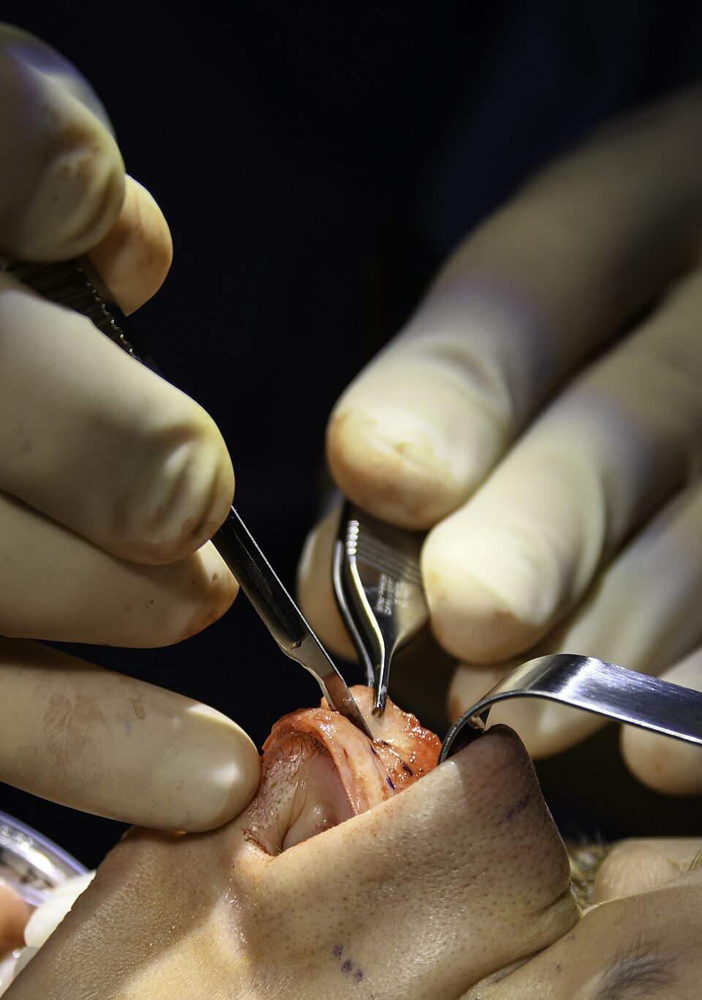

A second operation on the same nose is never simply a repeat of the first. Revision cases are widely considered the most demanding work in facial plastic surgery, and anyone considering rhinoplasty surgery in islamabad after an unsatisfying first result should understand why the planning is different.
The first operation changes the terrain: cartilage may have been removed, scar tissue binds the skin to the structures beneath, and the anatomy the surgeon expects to find may not be there. Support that was taken away often has to be rebuilt, which is why revision surgery frequently involves cartilage grafts - from the septum if enough remains, from the ear, or occasionally from rib cartilage.
Operating too early is a common mistake. A nose keeps changing for at least a year after surgery as swelling settles and scar tissue matures, and some problems that look permanent at three months resolve on their own. Most revision surgeons will not operate before twelve months except for clear functional problems, because the final shape of the first surgery has to be visible before it can be corrected.
Look for a surgeon who does revision work regularly and who will explain, specifically, what was done before, what is possible now, and what is not. Bring your previous operation notes if you can get them; they are genuinely useful. Honest revision consultations sometimes conclude that surgery is not advisable, and hearing that is valuable too.
General educational information only, not medical advice. A revision decision needs examination and, ideally, the records of the first procedure.